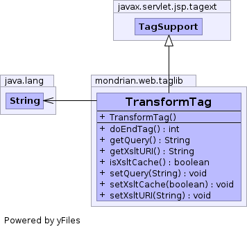

public class TransformTag extends javax.servlet.jsp.tagext.TagSupport
TransformTag renders the result of a ResultCache
object. Example:
The current slicer is
<transform query="query1"
xsltURI="/WEB-INF/mdxslicer.xsl"
xsltCache="true"/>
<br/>
<transform query="query1"
xsltURI="/WEB-INF/mdxtable.xsl"
xsltCache="false"/>
Attributes are
query,
xsltURI,
xsltCache.
| Constructor and Description |
|---|
TransformTag() |
| Modifier and Type | Method and Description |
|---|---|
int |
doEndTag() |
String |
getQuery() |
String |
getXsltURI() |
boolean |
isXsltCache() |
void |
setQuery(String newQuery)
Sets the string attribute
query, which is the name of a
query declared using the <query> tag. |
void |
setXsltCache(boolean newXsltCache)
Sets the boolean attribute
xsltCache, which determines
whether to cache the parsed representation of an XSL style-sheet. |
void |
setXsltURI(String newXsltURI)
Sets the string attribute
xsltURI, which is the URI of an
XSL style-sheet to transform query output. |
public TransformTag()
public int doEndTag() throws javax.servlet.jsp.JspException
doEndTag in interface javax.servlet.jsp.tagext.TagdoEndTag in class javax.servlet.jsp.tagext.TagSupportjavax.servlet.jsp.JspExceptionpublic void setQuery(String newQuery)
query, which is the name of a
query declared using the <query> tag.public void setXsltURI(String newXsltURI)
xsltURI, which is the URI of an
XSL style-sheet to transform query output.public String getXsltURI()
public void setXsltCache(boolean newXsltCache)
xsltCache, which determines
whether to cache the parsed representation of an XSL style-sheet.public boolean isXsltCache()